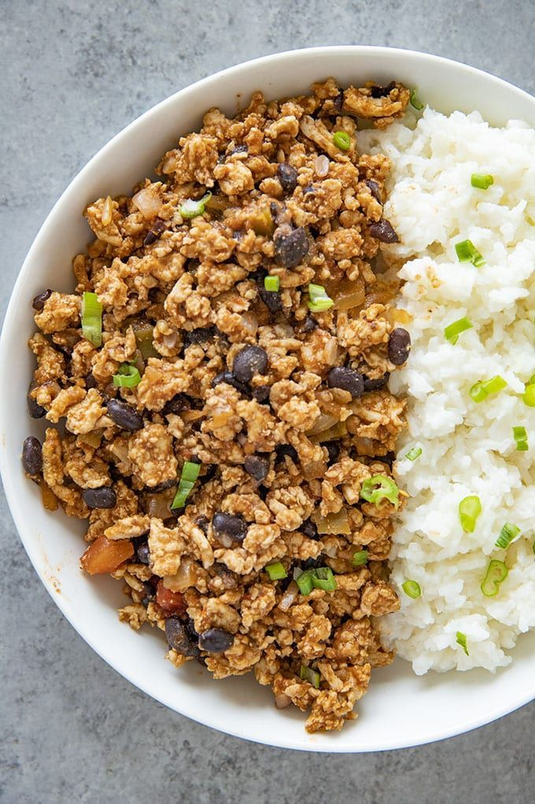

Turkey Spice & Beans

Description
Delicious, savory meal that you won't mind gobblin' up most
nights.
Ingredients
- Raw Turkey
- Butter or Coconut Oil
- Bone Broth or Water
- Poultry Seasoning
- Cajun Seasoning
- Sriracha Sauce
- Rice
- Beans
Steps
- Coat frying pan with Butter or Coconut Oil *or both*.
-
Place Raw Turkey in frying pan and ground it up into small pieces with a
spatula or spoon.
-
Season turkey with Poultry and Cajun Seasoning, then pour a small amount
of Bone Broth on top of everything.
-
Pour a bit of Sriracha Sauce, Mix with Spoon or Spatula, then place a
lid on top and let fully cook, while stirring occasionally.
- Heat up your Rice & Beans.
- Throw it all into a plate or bowl of your choosing.
- Enjoy your yummy Turkey Spice & Beans!